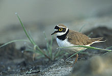
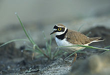

| Little Ringed Plover | |
|---|---|
|  | |
| Conservation status | |
| Binomial name | |
| Charadrius dubius Scopoli, 1786 |
| Little Ringed Plover | |
|---|---|
|  | |
| Conservation status | |
| Binomial name | |
| Charadrius dubius Scopoli, 1786 |
The Little Ringed Plover (Charadrius dubius) is a small plover. Adults have a grey-brown back and wings, a white belly, and a white breast with one black neckband. They have a brown cap, a white forehead, a black mask around the eyes with white above and a short dark bill. The legs are flesh-coloured and the toes are all webbed.
This species differs from the larger Ringed Plover in leg colour, the head pattern, and the presence of a clear yellow eye-ring.
Their breeding habitat is open gravel areas near freshwater, including gravel pits, islands and river edges in Europe and western Asia. They nest on the ground on stones with little or no plant growth. Both male and female take turn to incubate the eggs.
They are migratory and winter in Africa. These birds forage for food on muddy areas, usually by sight. They eat insects and worms.
The Little Ringed Plover is one of the species to which the Agreement on the Conservation of African-Eurasian Migratory Waterbirds (AEWA) applies.

.jpg){kind=link}